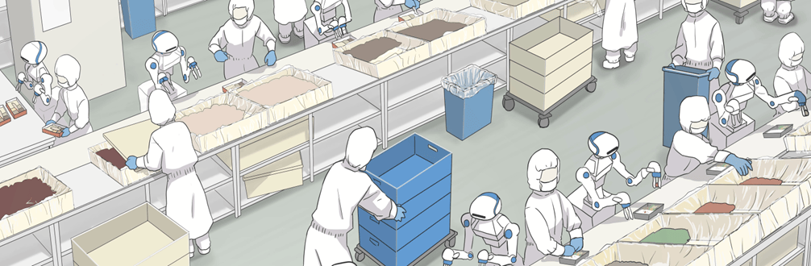

FOODLY Project @BIRL
Archived project or event page. Dates and roles describe the original activity.

Foodly is an AI-powered robotics solution for food handling and processing. Using computer vision and deep learning , Foodly can adapt to many challenging and novel environments conventional industrial robots may be unable to. Foodly can work in both restaurants and industrial settings, showing the capabilities of AI-powered robotics in challenging and novel environments.
‘FOODLY’ Project @ BIRL is a research project carried on in collaboration with RT Corporation, Japan.
FOODLY SPECIFICATIONS
| DIMENSIONS | 1530 × 300 × 500MM |
| PAYLOAD | >0.5KG PER ARM |
| POWER SUPPLY | 100/230V AC |
| SENSORS | 3D HEAD AND CHEST CAMERA |
| IP RATING | IP65 |
| HARDWARE WARRANTY | 3 YEARS |
FOODLY FEATURES
- AI VISION SYSTEM: Using onboard 3D cameras, Foodly is able to recognise different types of food in real time and manipulate challenging food types, such as those that are stacked, formless, or in bulk
- DUAL-ARM STRUCTURE:Foodly has two robotic arms that allow it to perform tasks simultaneously. Each arm has six degrees of freedom, providing a wide range of motions
- FLEXIBLE AND COMPACT: Foodly can be easily moved to adapt to layout changes and share a workspace with humans
WHY TO DO YOUR RESEARCH OR WORK WITH FOODLY
- 24/7 operation: can bring about a reduction in uncertainty when dealing with workers
- Improved hygiene: sterile food handling tongs can significantly reduce risk of contamination
- Improved consistency: avoids situations where the quality of production can waver due to tiredness or stress
- Modularity: can easily be slotted in and out to replace workers that are ill or moved to another station where more manpower is needed
- Data tracking: can automatically track statistics such as the number of items processed and the success rate
If you would like to ask a question or have more information, please contact us via web-site ENQUIRY form